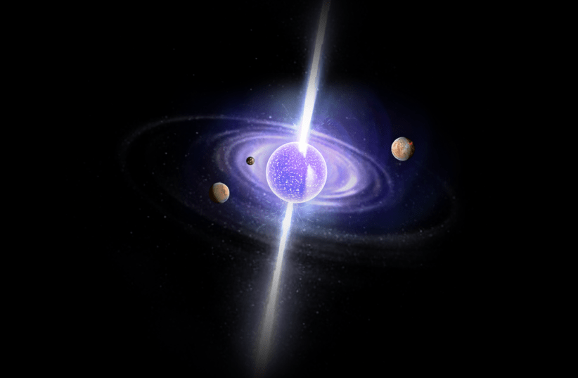
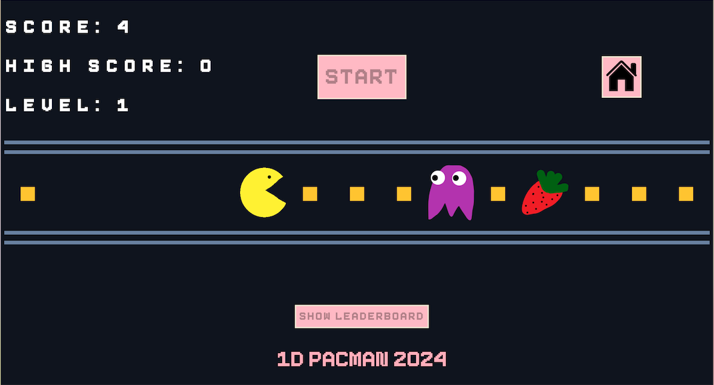

Projects
1) Pulsar Star Detection with Binary Classification
üî≠ Predicting pulsar stars with machine learning üî≠
Made with data taken from Kaggle, I used a binary classification model from scikit-learn to classify whether certain characteristics of radio signals received from space could be attributed to pulsar stars.
Technical Description/Gathering Domain Knowledge
Introduction
The subject of this dataset are pulsar stars. In order to understand the features of the dataset, it is helpful to have some domain knowledge of the topic.
Pulsars, short for “pulsating radio stars” are well described by their given name. Pulsars are a type of highly magnetized, rapidly rotating neutron star, which is a very dense type of star formed when an extremely large star undergoes a supernova explosion at the end of its life. This supernova explosion is due to the star collapsing under the weight of its own gravity.
The rapidly rotating nature of pulsars provide an explanation as to why they are so named: as they rotate, sometimes completing a full rotation in a matter of milliseconds to seconds, they appear to pulse periodically as they appear in our line of sight here on Earth.
The highly magnetized nature of pulsars (which can have magnetic fields up to trillions of times stronger than that of our own Earth’s) is caused due to their rapid rotation. Firstly, the types of massive stars that tend to become pulsars in the first place usually have significant magnetic fields to begin with. Following the core collapse of the star (having exhausted its nuclear fuel) under its own gravitational pull, the conservation of angular momentum is a concept that can be seen. As the star collapses, its radius (and other measurements) shrink rapidly, causing the remnants of the star to rotate faster. The core contracts as it spins faster, the progenitor star’s magnetic field becomes more concentrated and intense, in a process called magnetic flux conservation.
As the remnants form the neutron star, the intensified magnetic field interacts with the charged particles around it (from the star’s collapse), causing them to emit beams of radiation along the star’s magnetic poles. These beams are what form the pulses of pulsars, and are what give them this name.
Integrated Profile
An integrated profile is the time averaged (average intensity of the observed signal). In the context of pulsar observations, the integrated profile provides a clearer and more representative view of the pulsar's emission behaviour over its rotational period by time-averaging the data collected during multiple rotations. Comparing the integrated profile of the classified non-pulsars and pulsars could provide insight into which types of signal intensity generates each and if there is a pattern.
DN-SNR Curve
A DN-SNR curve, often referred to as a "Digital Number-Signal-to-Noise Ratio" curve, is a graphical representation used in the context of image processing and remote sensing to assess the quality of digital images or data acquired from sensors. It plots the Signal-to-Noise Ratio (SNR) against the Digital Number (DN) values for pixels in an image.
Here's what the components of a DN-SNR curve represent:
Digital Number (DN): In remote sensing or digital imaging, the DN represents the numerical value assigned to each pixel in the image. It typically corresponds to the pixel's brightness or intensity level. DNs can range from 0 (e.g., representing complete darkness) to a maximum value (e.g., representing full brightness or saturation).
Signal-to-Noise Ratio (SNR): SNR is a measure of the quality of the signal (useful information) in an image compared to the noise (unwanted interference or random variations). In the context of remote sensing or imaging, SNR quantifies how distinguishable the useful information (e.g., features on the ground) is from random variations or noise in the image. SNR is usually expressed in decibels (dB) and is calculated as:
SNR (dB) = 10 * log10(Signal Power / Noise Power) Signal Power represents the power of the signal (useful information). Noise Power represents the power of the noise. The DN-SNR curve shows how the SNR varies across different DN values in an image. Typically, you'll find that the SNR is higher for brighter or more intense pixels and lower for darker pixels. The curve can help analysts and researchers understand the image quality, identify the dynamic range of the sensor, and assess the trade-offs between capturing dim details and avoiding saturation (i.e., pixels with the maximum DN value).
Features:
- Mean of the integrated profile.
- Standard deviation of the integrated profile.
- Excess kurtosis of the integrated profile.
- Skewness of the integrated profile.
- Mean of the DM-SNR curve.
- Standard deviation of the DM-SNR curve.
- Excess kurtosis of the DM-SNR curve.
- Skewness of the DM-SNR curve.
- Class (Target Variable)
To model the features to determine the most relevant features to the model, plots such as the following were generated:
Making the plots allowed me to know which features were most important to use to train the model, especially using the heatmap and box plot.
The following is a code snippet that shows the libraries I used for this project. The use of IterativeImputer to fill in missing values, and the sklearn.metrics to ensure adequete performance of the model. The DecisionTreeClassifier and Logistic Regression were the models used for this prediction.
2) Bag of Words model Training
The Bag of Words model treats a text (such as a sentence or a document) as a collection of individual words, disregarding grammar and word order but keeping multiplicity. The basic idea is to create a vocabulary of all the unique words in the text data and then represent each document as a vector in which each element corresponds to a word from the vocabulary, with the value being the frequency (or sometimes just the presence) of that word in the document. The above image contains the following steps:
- Tokenization: Split the text into words (tokens).
- Normalization: Convert words to lowercase to ensure case insensitivity.
- Removal of Stop Words: Optionally, remove common words that may not carry significant meaning (e.g., "and", "the").
- Vocabulary Building: Create a list of all unique words (vocabulary) from the processed text data.
- Vector Representation: For each document, create a vector of the same length as the vocabulary.
Now each sentence can be categorized into belonging into either the BOOK or CLOTHING category.
3) Pacman Game
This Pacman game was made with JavaScript, HTML and CSS. It includes a user-friendly interface, as shown in the images below:


The following explains the technical aspects of creating this game:
- HTML: Used to create and divide the elements of the game, including the header, footer and game play area in the middke.
- CSS: Used to style the elements in the HTML, with id's, classes and attributes
- JavaScript: The following functions were used:
- startGame(): This function starts the game by initiating the ghost movement interval and listening for player key events.
- endGame(): This function ends the game by stopping the ghost movement interval, stopping continuous movement, and removing key event listeners.
- displayGameOver(): This function displays the game over modal.
- displayInstructions(): This function displays the instructions modal.
- resetGame(): This function resets the game by re-initializing game variables and starting a new game.
- createGame(n): This function implements the game board.
- renderGame(game): This function renders the game board to the HTML.
- moveLeft(game): This function shifts the Pacman char one position to the left.
- moveRight(game): This function shifts the Pacman char one position to the right.
- moveLeftContinuous(game): This function moves the Pacman char to the left.
- moveRightContinuous(game): This function moves the Pacman char to the right.
- processMove(cellContents): This function processes the move and updates the score.
- advanceLevel(): This function advances the game to the next level and increases the speed of the ghost.
- moveGhost(): This function moves the ghost character toward Pacman.
- handleKeyDown(event): This function handles keydown events for Pacman movement.
- getRandomInt(min, max): This is a helper function that generates random ints between the given number params.